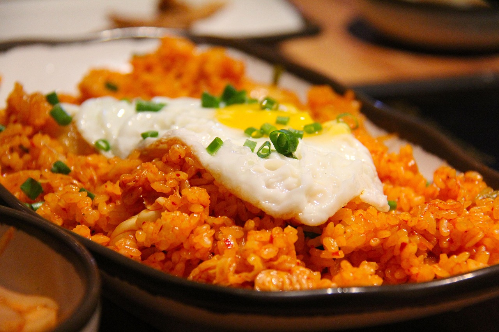
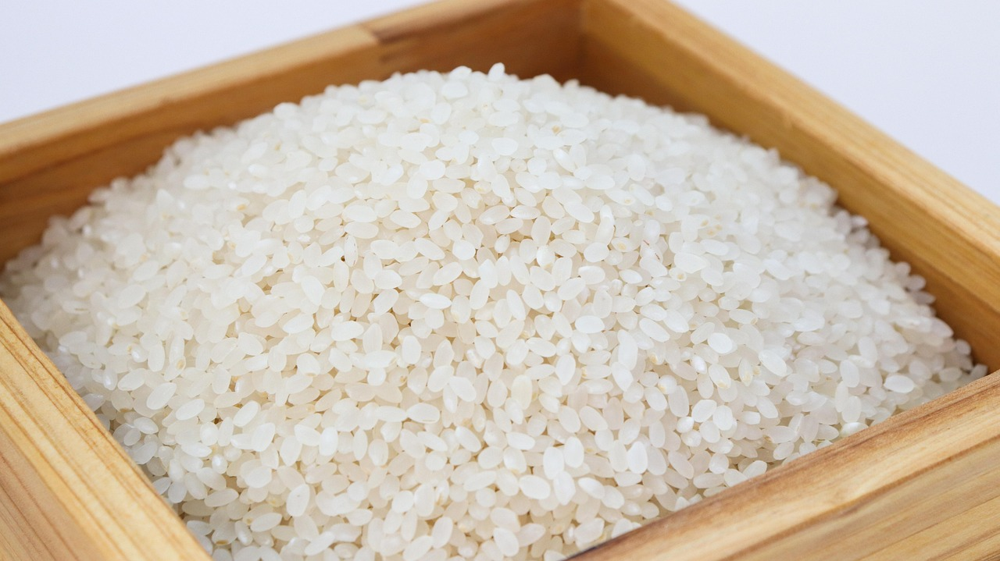
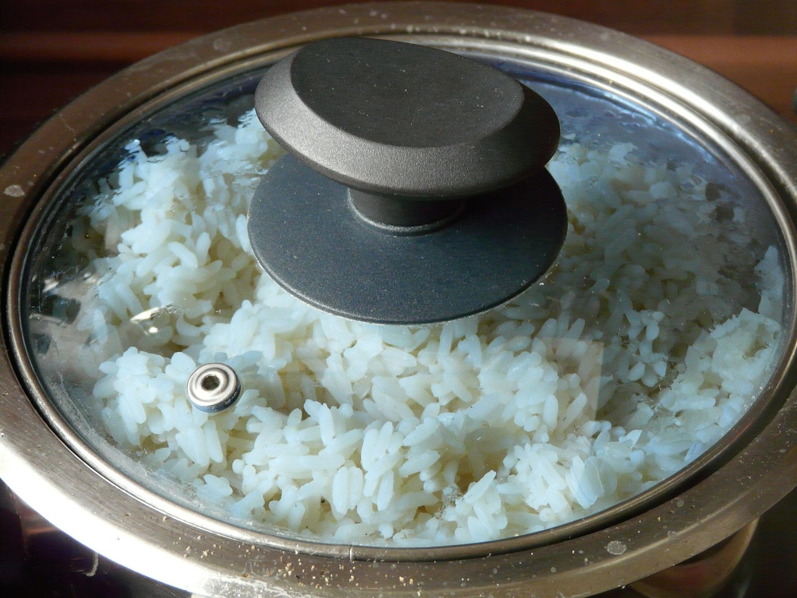
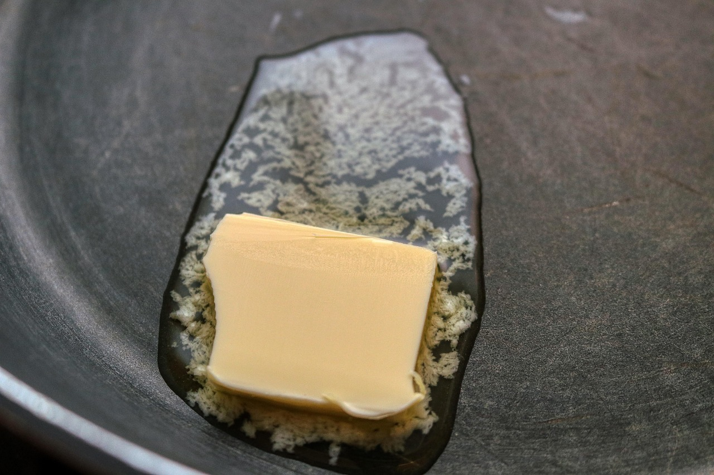
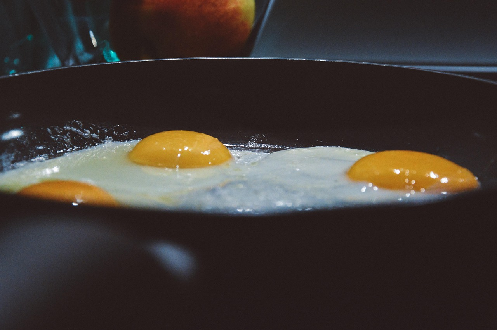
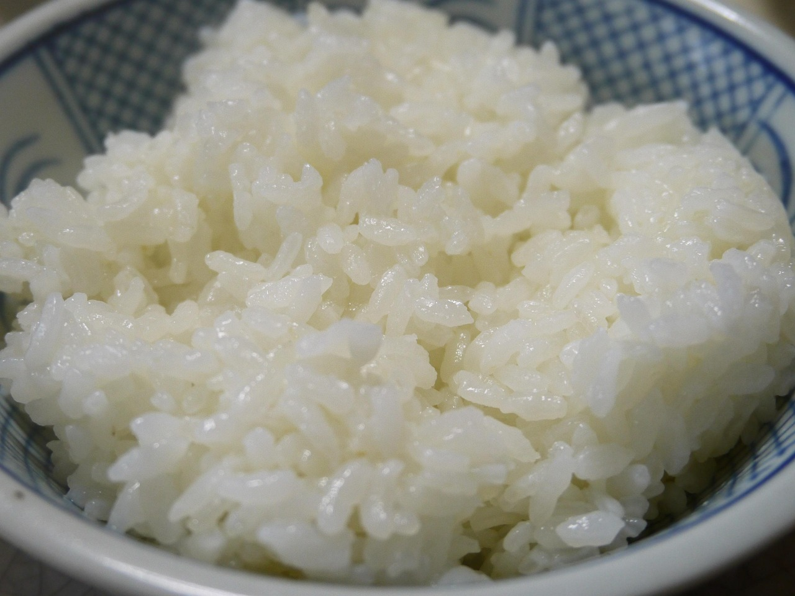
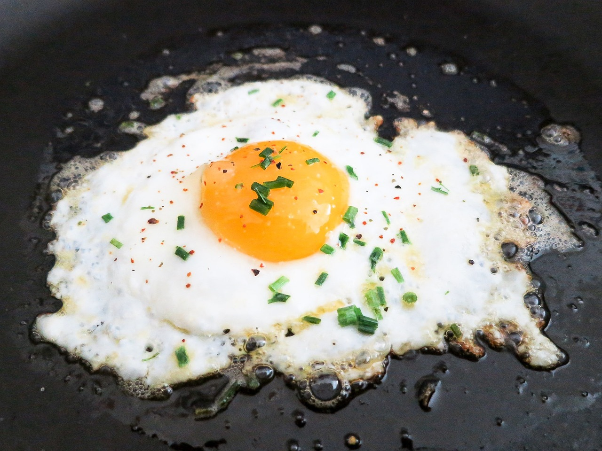
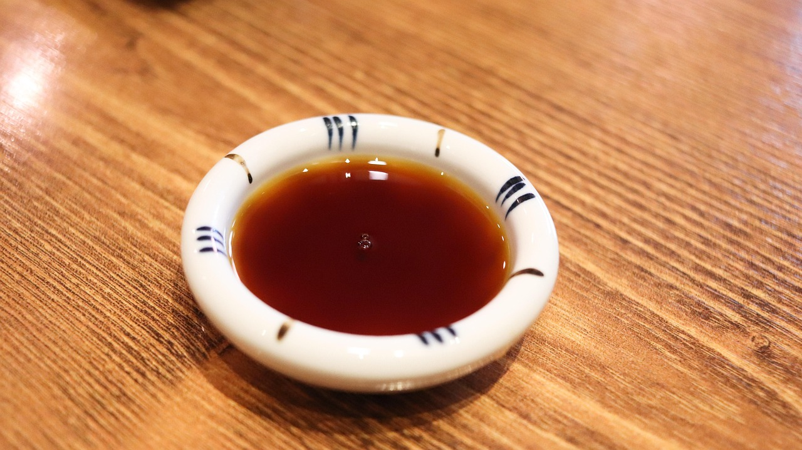
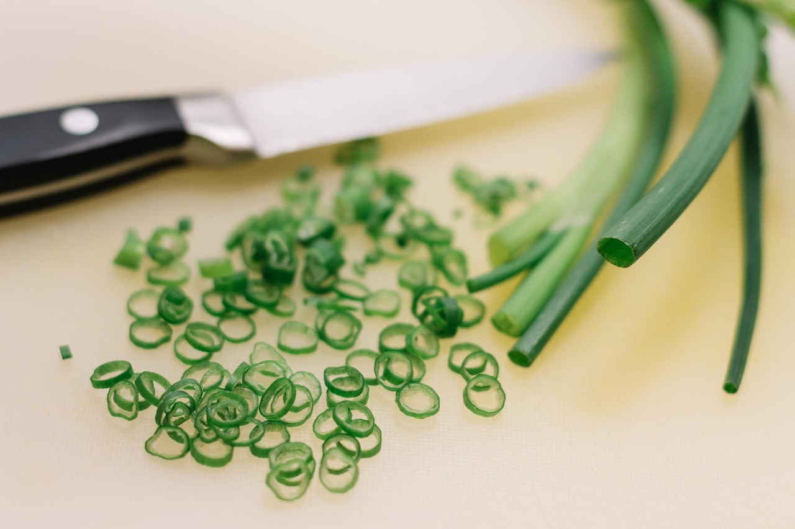

Journal Entry 1
Welcome to my FIRST journal entry! I chose to write this entry while working on this assignment for the website. The date of writing this entry is 4/18/2025, my late father's birthday.
I woke up in a flare-up today, unable to get out of bed for the first couple hours of my day. I chose to finish watching the apartment blocks around me wake up, since it was 7:00 am when my alarm went off. It was peaceful at first, and I did stretches as I could while my cat continued to sleep. Come 9:00 am, she woke up and demanded her breakfast reminding me of the routine I couldn't ignore. I had to grab my rollator in the mean time where I could sit on the seat and slowly push it around with my feet. It is a very time-consuming solution but was my only option since my wheelchair has yet to be approved.
After feeding my cat, I had to figure out my own breakfast. With the coffee beginning to brew, I decided to make my favorite rice and eggs. It is a very low effort meal but allows for me to get sodium and protein which is important. I am still trying to figure out how to cook while seated, as it takes a lot more awareness to navigate the kitchen and cookspace in front of me. Even if it took me extra time, the meal was delicious and I will share my recipe below! I am still trying to find more accessible ways to cook for myself and others. I have spent the rest of the day planning out my week and organizing my To-Do List. My main goal is to end the semester with no missing assignments, and so I am trying to organize my priorities to make this easier to achieve. On that note, it's time to get started on completing these assignments! Here's to a successful semester regardless of my own struggles.
How to Make Rice and Steamed Eggs
Materials You Will Need:
- White Rice (this recipe uses Jasmine)
- Rice Cooker/Pot to Cook Rice
- Olive Oil (any cooking oil can work/butter)
- Pan with Lid
- Water
- Eggs
- Soy Sauce
- Salt
- Pepper
- Toasted Sesame Oil
- Further Seasoning (optional)
Step 1: Prepare Your Rice
First, pour out one cup of rice into a bowl or your rice cooker.
Wash the rice by stirring your hand in the grains and drain.
Repeat process until water is not milky.
Step 2: Cook Your Rice
Allow your rice to cook, if it is in a rice cooker it will take around 15-20 minutes.
Once the rice is done, let it sit with the lid on and let it continue to stay warm in the pot.
Step 3: Start the Eggs
Take out a pan that has a lid which can fit.
Set the heat to medium and oil lightly.
Step 4: Cook the Eggs
Once the pan is up to the proper heat, crack two eggs into the pan.
Keep the yolks intact, do not let them break.
Season with salt, pepper, or seasonings of choice.
Step 5: Steam the Eggs
Once the whites of the eggs have started to solidify, add a small amount of water into the pan.
Cover with the lid immediately to start steam cooking the eggs.
Step 6: Plate your Rice
Place your rice into a bowl or onto a plate and flatten, season if you would like at this step.
Step 7: Remove the Eggs
After cooking until the egg is steamed, and the yolk has ample movement (around 2-3 minutes) remove the lid and take the pan off the heat.
Using a spatula take the eggs out of the pan, and place them onto the rice.
Step 8: Dress the Dish
Take soy sauce and add to your own personal taste.
Once it is applied to your liking, add toasted sesame oil to your own preference.
I personally use a lot due to the need of high sodium, but this recipe will not change based on the amount.
Step 9: Stir

Using Chopsticks or a Fork, depending on your choice stir your dish.
Use long strokes in order to properly break up the eggs and allow the yolk to bind the rice together.
Step 10: Garnish & Enjoy
Garnish with some salt, or seasoning of your choice.
I sometimes add green onions or furikake seasoning when I am able to.
Enjoy!
Additional Tips
- When using a rice cooker, allow the rice to sit 10 minutes after it is done cooking to reduce any extra moisture.
- This dish can be changed to add vegetables at any point!